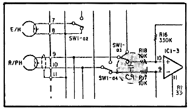
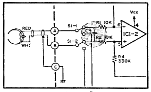

Issue 1, 1984 : Datasette 1
Model: 1530, 1531
PROBLEM: External noise interfereces cause a LOAD ERROR with some newer model datasettes. An engineering change has been issued; however, the possibility remains that some units have reached the field uncorrected.
SOLUTION:
| PCB Assy #CMR-001-0 | PCB Assy #017-5001-01 | PCB Assy #NP-090 | |||
| 1. | REMOVE the 150pF cap at C4 and REPLACE with a Ceramic 470pF 50WV | 1. | REMOVE the 150pF cap at C4 and REPLACE with a Ceramic 470pF 40WV | 1. | Check C4 for 470pF cap |
| 2. | ADD C9 across R17 and R18 | 2. | ADD C9 across R17 and R18 Note: use pins on SW1 - resistors are printed type |
2. | ADD C9 across R1 and R2 |
|  |  |
| PCB Assy #: CMR-001-0 017-5001-01 |
PCB Assy #: NP-090 |
Note - Correct values:
| C4 | Ceramic capacitor | .470pF | +/- 20% | 50 Working Volts |
| C9 | Ceramic capacitor | .0033uF | +/- 20% | 50 Working Volts |
| This page has been created by Sami Rautiainen. | |
| Read the small print. | Last updated January 19, 2006. |
{kind=link}
{kind=link}